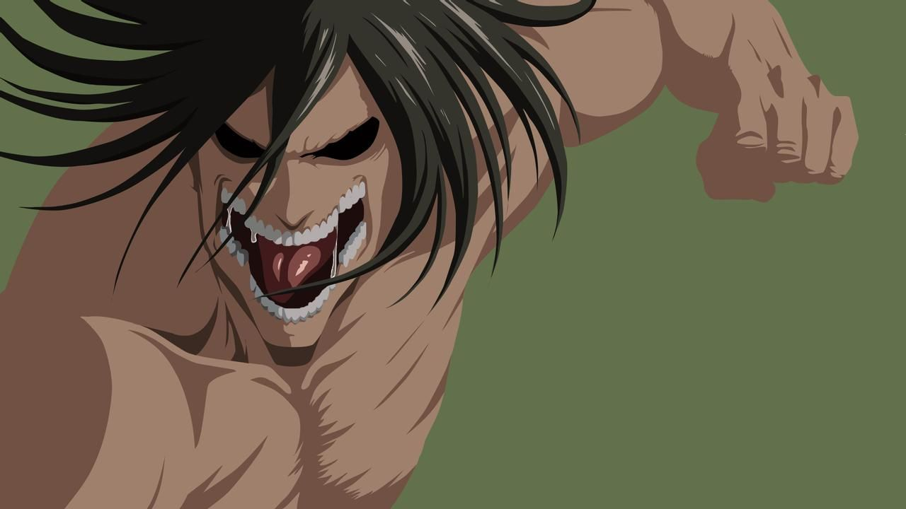

Es el protagonista de la serie. Eren nació en el Distrito Shiganshina, una ciudad situada en el exterior de la Muralla María. Junto con su hermana adoptiva Mikasa y su mejor amigo Armin Arlert, deciden entrar en el ejército de las murallas. Tras haber presenciado la aniquilación de su pueblo y la muerte de su madre a manos de los titanes. Permanece en él una venganza personal hacia los titanes, siendo su objetivo la eliminación de todos y cada uno de ellos debido a que mataron a su madre.
Al entrar en el escuadrón 104, conoce a muchos jóvenes de su edad, que al igual que él quieren convertirse en soldados. A raíz de su estancia con ellos, comienza a tener un afecto por todos en general, dándole otro objetivo, que es el de proteger a todos
Poco después Eren descubrirá el poder de titán que posee, decido por su padre. Su titán mide exactamente 15 metros, y se presenta totalmente al desnudo. El cuerpo de éste está bastante bien formado, asimilándose a un tipo mesomorfo. Su cabello es del mismo color que el de Eren, casi igual que largo, sólo que está totalmente despeinado, también sus ojos son del mismo color que éste, verdosos en su totalidad. La mandíbula de su titán está totalmente al descubierto, mostrando todos sus respectivos dientes.
Tras haber encontrado los secretos ocultos en el sótano de su padre, Eren se enteró del origen de los titanes y de la verdadera historia del mundo, descubriendo de esa forma que su verdadero enemigo es en realidad el hombre. Desde aquel entonces, Eren tomó el objetivo de eliminar a aquella amenaza para finalmente poder hallar la libertad.
